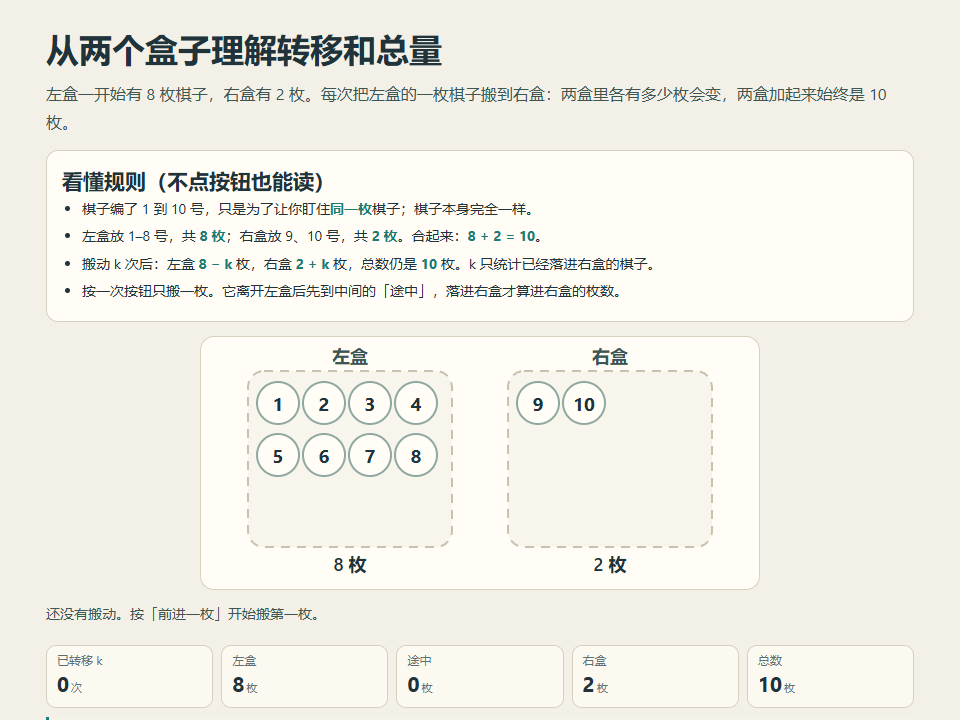

本地 RSI 对照 · 2026-10-22 · 已完成本轮判断 · 未改线上
教练选型已接通，完整范例读取仍未落实
本地实现已经让教练在演示制作前，依据本轮需求选择用途、阅读路径和具体表达方法。真实试跑中，教练的完整规划进入了主 Agent 输入，随后发生了 5 次实际方法读取。
读取仍停在卡片和部分示范：离散更新范例只读取 7000／25860 个字符，另外两种方法只读取卡片，首次交付的方法引用为空。接口已提供从 7000 继续的明确调用，作者没有继续读取。
按启动前冻结的条件，本轮在小试后停止；八次正式新题对照全部未启动。因此可以确认选型交接有进展，尚不能确认完整教师示范已被采用，也没有页面质量稳定提升的对照结论。
0/8正式新题未启动
5 次小试的非空方法读取进入作者输入；不等于范例已完整读入
¥6.55含全部诊断及正确批次的活动保守费用上限
选中方法、正文实际进入模型、对新题有效适配、页面质量改善分别判断。方法数量、读取次数和作者自评不替代后两项。
完整实验报告 · 真实运行汇总
实际小试页面
独立小试生成了可打开的棋子转移页面，22 次模型调用，峰时费用估算 0.92463656 元。教练一次调用完整返回，主 Agent 实际读取了三份方法卡片、一份适配 README，以及离散更新范例 HTML 的前 7000 字符。完整范例总长 25860 字符，另两种方法的示范 HTML 和适配 README 均未读取。全部这些缺口直到首交付仍存在，首交付 method_refs 为空。页面确实呈现了棋子身份、两盒数量及总量关系，但这与完整范例采用及学习效果不是同一证据。小试不计入新题质量样本。
1 次教练规划，5 次方法读取请求；22 次调用，峰时估算 ¥0.9246。
v3 独立小试 · 实际首交付
已首次交付 · 22 次模型调用

真实首次交付原样页面，未用人工修改版替换。
打开完整交互页 ↗
- 方法选中
- discrete-update@3；object-transform@2；part-whole@2
- 正文进入模型
- 5 次读取的非空正文进入后续作者输入
- 有效适配
- 真实首屏包含同一棋子的编号、左右盒位置、数量及总量对应；这说明出现了相关表达关系，不能据此断言其来自完整教师示范。
- 页面质量
- 已保留首交付并通过共同 Reader 渲染三种视口；因读取条件未达到，没有开展新题独立质量对照或学习者测试。
输入与交付证据
查看实际选型与正文覆盖记录
读取正文可能只有片段；完整文件覆盖和首写前、首交付前的时点分别保留在记录中。作者声明的 method_refs 也不能替代页面适配判断。
首次写入前，实际进入作者请求的方法正文（字符数）| 方法 | 方法卡 | 示例 HTML | 示例说明 |
|---|
| discrete-update@3 | 1187/1187（完整） | 7000/25860（部分） | 1646/1646（完整） |
|---|
| object-transform@2 | 826/826（完整） | 未读 | 未读 |
|---|
| part-whole@2 | 829/829（完整） | 未读 | 未读 |
|---|
首次交付声明的方法引用：[]。
新题对照未启动
以下八次为原定计划，不是已完成的对照样本。
- backprop-A1 · 共享节点的反向传播 · A 组第 1 次
- backprop-B1 · 共享节点的反向传播 · B 组第 1 次
- ridge-B1 · 岭回归的完整推导 · B 组第 1 次
- ridge-A1 · 岭回归的完整推导 · A 组第 1 次
- backprop-B2 · 共享节点的反向传播 · B 组第 2 次
- backprop-A2 · 共享节点的反向传播 · A 组第 2 次
- ridge-A2 · 岭回归的完整推导 · A 组第 2 次
- ridge-B2 · 岭回归的完整推导 · B 组第 2 次
原定 A/B 条件
A 在共同的首次有效 prepare 入口调用原教练规划 prompt/schema，再映射到共同交接格式，methods=[]。作者仍可自行读取方法。B 明确本次演示目的、学习目标、阅读路径和方法选型。两组共同使用新作者提示、新 prepare 入口、包含候选的方法库、模型与预算；A 是同入口的原规划对照，不是完全未改动的生产版本。v3 两组演示教练规划共同采用 16K 输出预算与 DeepSeek low，主作者配置不变。
已实现的制作前交接
首次有效 presentation.author prepare 同步调用现有教练模块的表达规划入口，覆盖 observing 和 active。输入分别保留当前用户原话、真实按钮动作、作者设想、已读材料证据与既有教学背景；作者自述不会被当成用户要求或页面验证结果。
规划明确本页用途、要理解的关系、实际阅读路径、方法 ID／版本及具体适配要求。可以用于机制理解、交互探索、深入推导或查阅；没有强制短视频开场、首屏图表或折叠公式。
主 Agent 通过既有 sampling_guidance 接收交接，重复 prepare 复用本轮规划。普通规划失败不自动重试；取消和费用停止向上传播，失败响应已报告的 usage 仍计入。首次制作入口的提示已经明确要求读取卡片、完整范例和适配说明，但实际读取行为尚未可靠落实。
真实读取记录
discrete-update@3：card.md 1187／1187 字符；example/README.md 1646／1646；example/index.html 7000／25860。object-transform@2：仅 card.md 826／826。part-whole@2：仅 card.md 829／829。三种方法都没有完整示范进入首次 write 前的后续作者请求。
native/request-004.json 的第 20 条 messages 记录了实际方法正文，同时包含 continuation.next_call，明确要求 offset=7000、length=7000 继续读取。已读 HTML 在样式之后的脚本开头截断。随后作者读取了 README，便开始 write；整个回合没有再次读取方法正文。缺页不是这次接口没给续读位置。
首次成功交付为 presentation-1792658991339127100-14 revision 1，content.method_refs=[]。教练推荐、正文进入输入、作者声明使用与页面有效适配均分别记录；没有把任何一项当作其他项的替代。
本轮修复的两个真实阻碍
方法读取原先把显式 length 当成精确范围，完整返回这一段后会过早给出 next_offset=null。现在 read_method 的 length 表示页大小，返回实际末端和既有 NextCall；预算进一步截短时也从实际返回末端续读。普通 presentation.read 的精确区间语义保持。
一次诊断中，教练 8192 输出额度里约 7990 用于推理，返回 finish_reason:length。连接 reset 是后续退出读取的现象。最终版本仅为本次表达规划设置 16384 输出与预留，并对 DeepSeek 明确 low reasoning；主作者和原有后台教练未改。最终小试教练完整返回，输出 2509 tokens，其中推理 1622，耗时约 16.2 秒。
下一步应改哪里
优先把选中主方法的正文交付变成执行层完成的步骤：根据精确方法版本，连续载入卡片、完整示范和适配说明，再交给作者制作；必要时提供明确不适用的退出路径。不要继续把是否续读完全留给作者自行决定。
由宿主保留实际进入模型的文件与范围，用于解释采用记录；方法引用不能靠作者空填或口头承诺代替。作者仍负责判断知识条件、实现具体关系和根据真实预览修订。
这是根据本轮失败证据提出的后续调整，本轮尚未实施或验证。完整示范消费是本次预先固定的实验条件，不是对所有好页面的普遍必要条件；本轮没有证明局部读取没有价值。原定反向传播与完整回归推导两道新题没有生成结果，仍可用于下一轮相同模型的正式对照。
验证与源码依据
相关 presentation 回归 123 项通过。分页修复的 5 项 runtime 检查、普通 read 精确区间检查、实际输入观察检查以及服务端所有注册方法文件按 333 字符连续重建检查均通过。最终规划参数模块 9 项测试通过。这些检查存在覆盖重叠，不相加宣称独立总数。
广检还发现一个本轮之前已存在的音乐 source.present schema 测试不一致：旧测试期望两种输入分支，实际已有三种。本轮没有修改该旧问题，因此不宣称全仓检查通过。
源码及两组产物记录于 source-freeze-v3.json 和 logs-v3/pair-verification.json。两组 runtime/server 均实际重新编译；1038 个非变体文件直接字节比较一致；两组仅教练选型执行不同。没有部署或写入线上工作区。
费用解释
四批诊断／小试合计 48 次上游调用，活动保守费用上限 6.55102280 元。其中成功调用按 usage 的峰时估算合计 2.22564680 元，另有两笔失败／中断的最坏预留共 4.32537600 元。保守预留不是已知实际消费。
活动内部上限从 10 元调整至 15 元发生在正式新题尚未启动时，全部历史费用持续计入，此后没有增加上限。本次停止由预先固定的读取条件触发，原因不是额度耗尽。
诊断试跑与活动总账
先前 B 构建误复用了 A，试跑在 2 次调用后停止，没有首次交付。该试跑不计入有效小试或正式题质量样本。有 usage 的峰时估算为 ¥0.07340096；第 2 次调用中断且缺少 usage，保留最坏预留 ¥2.16268800。两项合成保守上限，预留不是已知实际消费。
分页诊断小试为 22 次调用，有 usage 的峰时估算 ¥1.14066784，中断预留 ¥0。它用于检查方法正文分页交接，不计入正式新题质量样本。
输出截断诊断为 2 次调用，未交付页面。教练规划触及 8192 输出限额（usage 记录推理 7990），返回 finish_reason:length；随后出现的连接 reset 是客户端退出读取后的次生现象。成功返回且有 usage 的峰时估算为 ¥0.08694144；失败调用保留 ¥2.16268800 的最坏预留。该失败调用虽有 usage，仍存在上游错误，因此不将其视为已知实付。试跑继续计入现有内部上限，不作为新题质量样本。
两次诊断结清、八次正式新题均未启动时，为保留原定平衡对照，内部执行上限从 ¥10 调整至 ¥15；两次诊断和中断预留继续计入，之后不再扩支。该金额是本轮执行过程中设定的内部上限。
无效构建试跑上限 ¥2.23608896；分页诊断小试上限 ¥1.14066784；输出截断诊断上限 ¥2.24962944；正确批次 ¥0.92463656；活动合计 ¥6.55102280。
成功调用 usage 的峰时估算合计 ¥2.22564680；错误调用保留的未知实付预留合计 ¥4.32537600。活动共 48 次调用，预留与估算相加为保守上限，不是实扣账单。
全部批次活动聚合账目 · 无效构建试跑原始账目 · 分页诊断原始账目 · 输出截断诊断原始账目
本轮判断
保留这轮本地实现与全部证据，线上和正式方法目录不变。当前不把此版本视为已经验证成功的教师示范迁移方案。下一步应让执行层落实选中主方法的连续载入与实际消费记录，再开展原定新题对照；继续增加提示词不能替代这个执行环节。
正式新题未启动，未开展独立 A/B 页面评审。
适用范围
八次正式新题均未启动，没有 A/B 页面质量结论，也没有真实读者学习效果证据。
A 设计为共同新入口中的原教练提示基线，不是完全未改的旧生产版本；两组本应共用目录、作者配置、模型和 Reader。
小试为 observing 夹具，没有激活完整的连续教学审核循环。
实际返回模型名为 deepseek-flash，请求名为 deepseek-v4-flash；这不是对服务商后端不可变版本的保证。
正式方法目录维持 revision 5，包含候选示范的 revision 6 仅用于隔离实验；线上未变。